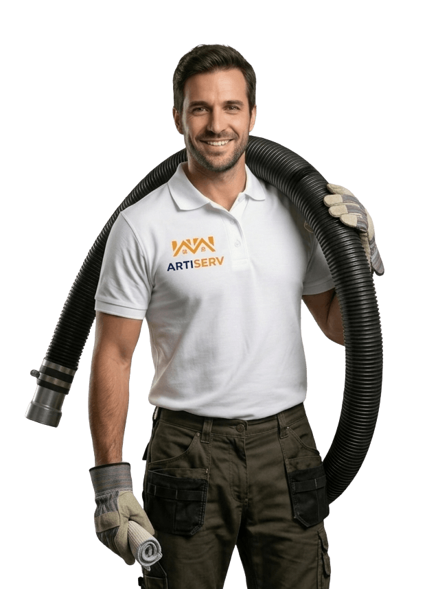

Expert en pompage et vidange dans le Val-de-Marne Vitry-sur-Seine et dans le 94. Évacuation rapide de caves inondées, fosses pleines, égouts bouchés. Intervention urgente 24/7 avec notre camion pompe haute capacité.

ARTISERV Débouchage intervient dans le Val-de-Marne Vitry-sur-Seine et dans le 94 pour le pompage et l'évacuation d'eaux usées. Que ce soit pour une cave inondée, une fosse septique pleine, des égouts qui refoulent ou des eaux pluviales stagnantes, notre camion pompe professionnel haute capacité évacue rapidement et proprement tous types d'eaux.
Nos techniciens qualifiés interviennent 24h/24 et 7j/7 pour les urgences (inondations, refoulements) avec un délai d'arrivée de moins de 30 minutes sur Vitry-sur-Seine et agglomération. Équipement industriel adapté à toutes les situations : pompes submersibles, camion hydrocureur avec cuve, raccordements flexibles pour accès difficiles.
Zone d'intervention : Vitry-sur-Seine, Saint-Cyr-sur-Loire, Joué-lès-Tours, Saint-Pierre-des-Corps, La Riche, Saint-Avertin et toutes les communes dans le 94. Devis gratuit par téléphone, tarifs transparents sans surprise.
Évacuation rapide d'eau stagnante en sous-sol, cave ou parking inondé. Pompage haute capacité avec camion professionnel. Intervention urgente pour limiter les dégâts matériels et risques sanitaires.
Pompage complet de fosses septiques et fosses toutes eaux. Évacuation conforme des boues vers station d'épuration agréée. Nettoyage des préfiltres et vérification du bon fonctionnement. Bordereau de suivi des déchets fourni.
Pompage d'égouts bouchés et évacuation des refoulements d'eaux usées. Intervention d'urgence pour stopper la remontée et évacuer les eaux souillées.
Pompage d'eaux de pluie accumulées sur terrasses, cours, parkings ou voiries. Évacuation rapide après fortes intempéries.
Vidange et nettoyage de bacs à graisse pour restaurants, collectivités et industries. Respect des normes sanitaires, traçabilité complète.
Intervention express 24/7 pour toute urgence de pompage : inondation soudaine, canalisation qui déborde, sinistre dégât des eaux. Arrivée -30 min.
En cas d'urgence (cave inondée, refoulement), notre camion pompe arrive en moins de 30 minutes sur Vitry-sur-Seine et agglomération. Disponible 24h/24 et 7j/7, week-ends et jours fériés inclus.
Camion hydrocureur avec cuve de grande capacité, pompes submersibles industrielles, flexible de tous diamètres. Matériel adapté à tous types d'interventions et d'accès.
Évacuation des eaux usées vers station d'épuration agréée. Respect strict des normes sanitaires et environnementales. Bordereau de suivi des déchets fourni pour fosses et bacs à graisse.
Devis gratuit par téléphone avant intervention. Tarifs clairs sans surprise, facturation au volume pompé ou forfait selon la prestation. Paiement sécurisé par CB, chèque ou virement.
Prix indicatifs pour Vitry-sur-Seine et agglomération. Devis gratuit et personnalisé par téléphone.
Note : Les tarifs ci-dessus sont donnés à titre indicatif pour Vitry-sur-Seine et peuvent varier selon la distance, l'accès, le volume à pomper et le type d'eaux (claires, usées, boueuses). Un devis gratuit et détaillé vous sera fourni par téléphone avant toute intervention.
Appelez-nous maintenant pour une intervention rapide avec notre camion pompe professionnel. Devis gratuit par téléphone.
Appelez maintenantOui, nous proposons un service d'urgence 24h/24 et 7j/7. En cas d'inondation, notre camion pompe peut intervenir en moins de 30 minutes sur Vitry-sur-Seine et agglomération. Plus l'intervention est rapide, plus les dégâts seront limités.
Notre équipement professionnel nous permet de pomper tous types d'eaux : eaux claires (pluie, inondation), eaux usées domestiques, eaux chargées en boues, graisses, fosses septiques, bacs à graisse. Nous adaptons notre matériel (pompes, diamètre de flexible) selon la nature des eaux à évacuer.
Le tarif dépend de plusieurs facteurs : le volume à pomper (en m³), le type d'eaux (claires, usées, chargées), la distance jusqu'au lieu d'intervention, l'accessibilité du site, et le caractère urgent ou non de la prestation. Nous fournissons toujours un devis gratuit et transparent par téléphone avant intervention.
Une fosse septique doit être vidangée tous les 3 à 4 ans en moyenne pour un foyer de 4 personnes. La fréquence peut varier selon la taille de la fosse, le nombre d'occupants, et l'usage. Des signes comme des odeurs, des refoulements ou un niveau élevé de boues indiquent qu'une vidange est nécessaire.
Les eaux usées et boues sont évacuées conformément à la réglementation vers une station d'épuration agréée. Pour les professionnels (restaurants, industries), nous fournissons un bordereau de suivi des déchets (BSD) obligatoire pour la traçabilité.
Après le pompage, un nettoyage et une désinfection sont indispensables pour éviter moisissures et mauvaises odeurs. Nous proposons ce service en complément. Il est aussi recommandé de faire vérifier l'origine de l'inondation (canalisation bouchée, infiltration) pour éviter la récidive.